[딜러: 바드, 소라카]· 구인수의 격노검, 거인 학살자의 조합 아이템인곡궁을 추천합니다.
· 마법공학 총검, 대천사의 지팡이, 보석 건틀릿의 조합 아이템인쓸데없이 큰 지팡이를 추천합니다.
[탱커: 탐 켄치, 니코]· 태양불꽃 망토, 워모그의 갑옷의 조합 아이템인거인의 허리띠를 추천합니다.
천계 신화 바드 리롤 덱
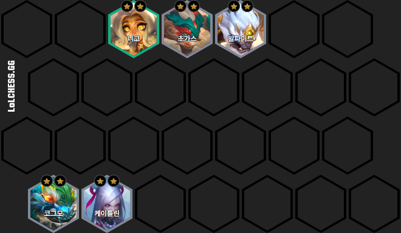
4현자 모르가나 오공 덱

[딜러: 모르가나, 케인, 오공]· 모렐로노미콘, 라바돈의 죽음모자의 조합 아이템인쓸데없이 큰 지팡이를 추천합니다.
· 쇼진의 창, 푸른 파수꾼, 정의의 손길의 조합 아이템인여신의 눈물을 추천합니다.
[탱커: 갈리오]· 가고일 돌갑옷의 조합 아이템인쇠사슬 조끼를 추천합니다.
· 쇼진의 창, 푸른 파수꾼, 정의의 손길의 조합 아이템인여신의 눈물을 추천합니다.
[탱커: 갈리오]· 가고일 돌갑옷의 조합 아이템인쇠사슬 조끼를 추천합니다.
필연 아펠리오스 신드라 덱
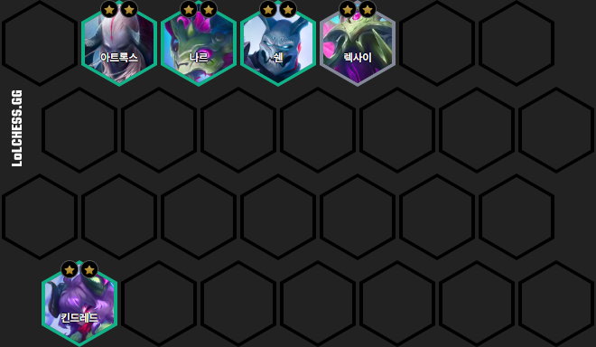[딜러: 아펠리오스, 애쉬, 신드라]· 최후의 속삭임, 구인수의 격노검, 루난의 허리케인의 조합 아이템인곡궁을 추천합니다.
· 무한의 대검, 거인 학살자의 조합 아이템인BF 대검을 추천합니다.
· 보석 건틀릿, 라바돈의 죽음모자의 조합 아이템인쓸데없이 큰 지팡이를 추천합니다.
[탱커: 쓰레쉬, 아무무]· 워모그의 갑옷, 태양불꽃 망토의 조합 아이템인거인의 허리띠를 추천합니다.
· 무한의 대검, 거인 학살자의 조합 아이템인BF 대검을 추천합니다.
· 보석 건틀릿, 라바돈의 죽음모자의 조합 아이템인쓸데없이 큰 지팡이를 추천합니다.
[탱커: 쓰레쉬, 아무무]· 워모그의 갑옷, 태양불꽃 망토의 조합 아이템인거인의 허리띠를 추천합니다.
6암영 요네 리롤 덱
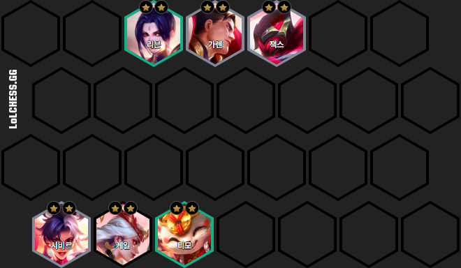[딜러: 요네, 알룬]· 피바라기의 조합 아이템인BF 대검을 추천합니다.
· 거인의 결의, 구인수의 격노검의 조합 아이템인곡궁을 추천합니다.
· 구인수의 격노검, 보석 건틀릿, 라바돈의 죽음모자의 조합 아이템인쓸데없이 큰 지팡이를 추천합니다.
· 거인의 결의, 구인수의 격노검의 조합 아이템인곡궁을 추천합니다.
· 구인수의 격노검, 보석 건틀릿, 라바돈의 죽음모자의 조합 아이템인쓸데없이 큰 지팡이를 추천합니다.
6혼령 케이틀린 쉔 리롤 덱
[딜러: 케이틀린, 모르가나, 케인]· 구인수의 격노검, 보석 건틀릿, 모렐로노미콘의 조합 아이템인쓸데없이 큰 지팡이를 추천합니다.
· 무한의 대검, 쇼진의 창, 피바라기의 조합 아이템인 BF 대검을 추천합니다.
[탱커: 쉔, 아트록스]· 워모그의 갑옷, 구원의 조합 아이템인거인의 허리띠를 추천합니다.
· 무한의 대검, 쇼진의 창, 피바라기의 조합 아이템인 BF 대검을 추천합니다.
[탱커: 쉔, 아트록스]· 워모그의 갑옷, 구원의 조합 아이템인거인의 허리띠를 추천합니다.
4용군주 아지르 흐웨이 덱
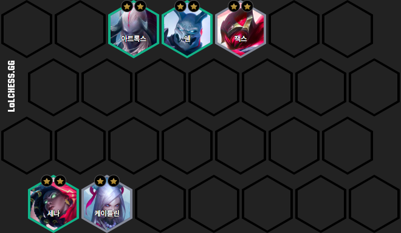· 보석 건틀릿, 구인수의 격노검, 라바돈의 죽음모자의 조합 아이템인쓸데없이 큰 지팡이를 추천합니다.
· 쇼진의 창, 정의의 손길의 조합 아이템인여신의 눈물을 추천합니다.
· 피바라기, 거인 학살자, 쇼진의 창의 조합 아이템인BF 대검을 추천합니다.
· 쇼진의 창, 정의의 손길의 조합 아이템인여신의 눈물을 추천합니다.
· 피바라기, 거인 학살자, 쇼진의 창의 조합 아이템인BF 대검을 추천합니다.
신화 코그모 리롤 덱
[딜러: 코그모, 케이틀린]· 푸른 파수꾼, 쇼진의 창의 조합 아이템인여신의 눈물을 추천합니다.
· 보석 건틀릿, 무한의 대검, 최후의 속삭임의 조합 아이템인연습용 장갑을 추천합니다.
[탱커: 초가스, 니코]· 가고일 돌갑옷, 태양불꽃 망토의 조합 아이템인쇠사슬 조끼를 추천합니다.
· 보석 건틀릿, 무한의 대검, 최후의 속삭임의 조합 아이템인연습용 장갑을 추천합니다.
[탱커: 초가스, 니코]· 가고일 돌갑옷, 태양불꽃 망토의 조합 아이템인쇠사슬 조끼를 추천합니다.
6결투가 리롤 덱
[딜러: 트리스타나, 리 신, 이렐리아]· 최후의 속삭임, 구인수의 격노검, 거인 학살자의 조합 아이템인곡궁을 추천합니다.
· 무한의 대검, 피바라기의 조합 아이템인BF 대검을 추천합니다.
[탱커: 다이애나, 볼리베어]· 태양불꽃 망토, 가고일 돌갑옷, 거인의 결의의 조합 아이템인쇠사슬 조끼를 추천합니다.
· 무한의 대검, 피바라기의 조합 아이템인BF 대검을 추천합니다.
[탱커: 다이애나, 볼리베어]· 태양불꽃 망토, 가고일 돌갑옷, 거인의 결의의 조합 아이템인쇠사슬 조끼를 추천합니다.
숲지기 나르 세나 리롤 덱
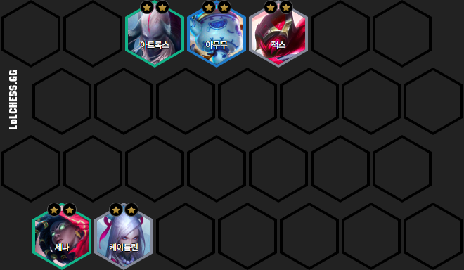[딜러: 나르, 세나]· 구인수의 격노검, 최후의 속삭임, 거인의 결의의 조합 아이템인곡궁을 추천합니다.
· 피바라기, 거인 학살자의 조합 아이템인BF 대검을 추천합니다.
[탱커: 아트록스, 렉사이, 잭스]· 태양불꽃 망토, 구원의 조합 아이템인거인의 허리띠를 추천합니다.
· 피바라기, 거인 학살자의 조합 아이템인BF 대검을 추천합니다.
[탱커: 아트록스, 렉사이, 잭스]· 태양불꽃 망토, 구원의 조합 아이템인거인의 허리띠를 추천합니다.
숲지기 킨드레드 리롤 덱
[딜러: 킨드레드, 나르]· 거인 학살자, 피바라기의 조합 아이템인BF 대검을 추천합니다.
· 푸른 파수꾼, 정의의 손길의 조합 아이템인여신의 눈물을 추천합니다.
[탱커: 일라오이, 오른]· 덤불 조끼, 태양불꽃 망토, 크라운가드의 조합 아이템인쇠사슬 조끼를 추천합니다.
· 푸른 파수꾼, 정의의 손길의 조합 아이템인여신의 눈물을 추천합니다.
[탱커: 일라오이, 오른]· 덤불 조끼, 태양불꽃 망토, 크라운가드의 조합 아이템인쇠사슬 조끼를 추천합니다.
필연 아리 야스오 리롤 덱

[딜러: 아리, 신드라]· 쇼진의 창, 푸른 파수꾼의 조합 아이템인여신의 눈물을 추천합니다.
· 보석 건틀릿, 라바돈의 죽음모자의 조합 아이템인쓸데없이 큰 지팡이를 추천합니다.
[탱커: 야스오, 쓰레쉬]· 가고일 돌갑옷, 태양불꽃 망토의 조합 아이템인쇠사슬 조끼를 추천합니다.
· 보석 건틀릿, 라바돈의 죽음모자의 조합 아이템인쓸데없이 큰 지팡이를 추천합니다.
[탱커: 야스오, 쓰레쉬]· 가고일 돌갑옷, 태양불꽃 망토의 조합 아이템인쇠사슬 조끼를 추천합니다.
4난동꾼 신화 바드 리롤
[딜러: 바드]· 구인수의 격노검, 거인 학살자의 조합 아이템인곡궁을 추천합니다.
· 구인수의 격노검, 마법공학 총검의 조합 아이템인쓸데없이 큰 지팡이를 추천합니다.
[탱커: 탐 켄치, 노틸러스]· 태양불꽃 망토, 워모그의 갑옷의 조합 아이템인거인의 허리띠를 추천합니다.
· 구인수의 격노검, 마법공학 총검의 조합 아이템인쓸데없이 큰 지팡이를 추천합니다.
[탱커: 탐 켄치, 노틸러스]· 태양불꽃 망토, 워모그의 갑옷의 조합 아이템인거인의 허리띠를 추천합니다.
7이야기꾼 이렐리아 덱
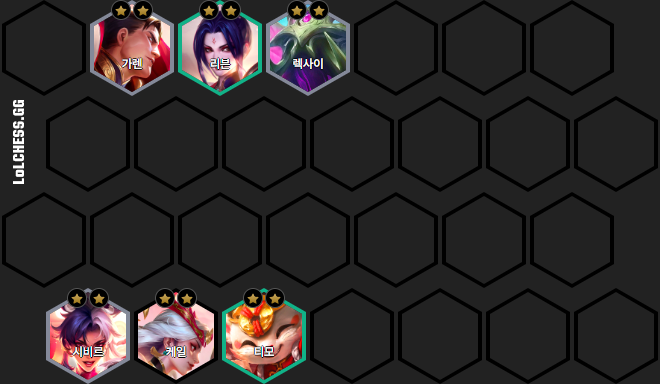
[딜러: 이렐리아]· 구인수의 격노검, 거인 학살자의 조합 아이템인곡궁을 추천합니다.
· 무한의 대검, 거인 학살자의 조합 아이템인BF 대검을 추천합니다.
[탱커: 갈리오]· 가고일 돌갑옷의 조합 아이템인쇠사슬 조끼를 추천합니다.
· 무한의 대검, 거인 학살자의 조합 아이템인BF 대검을 추천합니다.
[탱커: 갈리오]· 가고일 돌갑옷의 조합 아이템인쇠사슬 조끼를 추천합니다.
4난동꾼 4재주꾼 카이사 덱
[딜러: 카이사, 자야]· 최후의 속삭임, 구인수의 격노검의 조합 아이템인곡궁을 추천합니다.
· 무한의 대검, 거인 학살자의 조합 아이템인BF 대검을 추천합니다.
[탱커: 갈리오]· 가고일 돌갑옷의 조합 아이템인쇠사슬 조끼를 추천합니다.
· 무한의 대검, 거인 학살자의 조합 아이템인BF 대검을 추천합니다.
[탱커: 갈리오]· 가고일 돌갑옷의 조합 아이템인쇠사슬 조끼를 추천합니다.
4용군주 잔나 리롤 덱
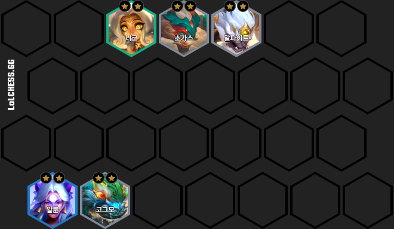[딜러: 잔나, 자이라]· 구인수의 격노검, 대천사의 지팡이, 보석 건틀릿의 조합 아이템인쓸데없이 큰 지팡이를 추천합니다.
· 쇼진의 창, 대천사의 지팡이의 조합 아이템인여신의 눈물을 추천합니다.
[탱커: 갈리오]· 가고일 돌갑옷의 조합 아이템인쇠사슬 조끼를 추천합니다.
· 쇼진의 창, 대천사의 지팡이의 조합 아이템인여신의 눈물을 추천합니다.
[탱커: 갈리오]· 가고일 돌갑옷의 조합 아이템인쇠사슬 조끼를 추천합니다.
환영 칼날 쉔 덱
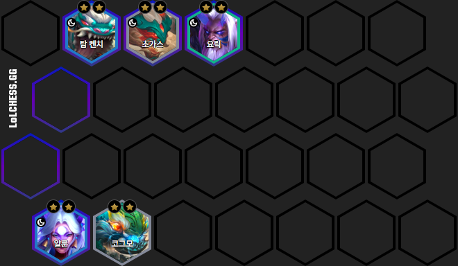[딜러: 쉔]· 구인수의 격노검, 거인 학살자의 조합 아이템인곡궁을 추천합니다.
[탱커: 요릭, 쓰레쉬]· 워모그의 갑옷의 조합 아이템인거인의 허리띠를 추천합니다.
[탱커: 요릭, 쓰레쉬]· 워모그의 갑옷의 조합 아이템인거인의 허리띠를 추천합니다.
행운 4재주꾼 덱
[딜러: 티모, 카이사]· 보석 건틀릿, 모렐로노미콘의 조합 아이템인쓸데없이 큰 지팡이를 추천합니다.
· 푸른 파수꾼, 쇼진의 창, 정의의 손길의 조합 아이템인 여신의 눈물을 추천합니다.
· 최후의 속삭임, 무한의 대검, 보석 건틀릿의 조합 아이템인 연습용 장갑을 추천합니다.
[탱커: 갈리오, 애니]· 가고일 돌갑옷, 덤불 조끼의 조합 아이템인쇠사슬 조끼를 추천합니다.
· 푸른 파수꾼, 쇼진의 창, 정의의 손길의 조합 아이템인 여신의 눈물을 추천합니다.
· 최후의 속삭임, 무한의 대검, 보석 건틀릿의 조합 아이템인 연습용 장갑을 추천합니다.
[탱커: 갈리오, 애니]· 가고일 돌갑옷, 덤불 조끼의 조합 아이템인쇠사슬 조끼를 추천합니다.
건강 또 건강 2코 리롤 덱
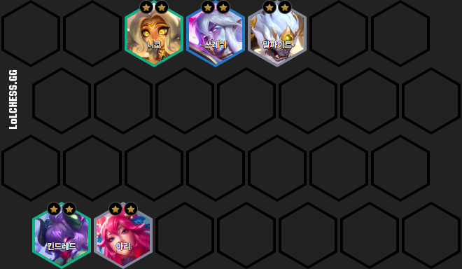[딜러: 세나, 티모]· 모렐로노미콘, 구인수의 격노검의 조합 아이템인쓸데없이 큰 지팡이를 추천합니다.
· 푸른 파수꾼, 쇼진의 창의 조합 아이템인 여신의 눈물을 추천합니다.
· 거인 학살자, 무한의 대검의 조합 아이템인 BF 대검을 추천합니다.
[탱커: 쉔, 아트록스]· 덤불 조끼, 거인의 결의의 조합 아이템인쇠사슬 조끼를 추천합니다.
· 푸른 파수꾼, 쇼진의 창의 조합 아이템인 여신의 눈물을 추천합니다.
· 거인 학살자, 무한의 대검의 조합 아이템인 BF 대검을 추천합니다.
[탱커: 쉔, 아트록스]· 덤불 조끼, 거인의 결의의 조합 아이템인쇠사슬 조끼를 추천합니다.
7신화 기원자 릴리아 덱
[딜러: 릴리아, 흐웨이]· 보석 건틀릿, 라바돈의 죽음모자, 모렐로노미콘의 조합 아이템인쓸데없이 큰 지팡이를 추천합니다.
· 쇼진의 창의 조합 아이템인여신의 눈물을 추천합니다.
[탱커: 노틸러스, 애니]· 가고일 돌갑옷, 덤불 조끼의 조합 아이템인쇠사슬 조끼를 추천합니다.
· 쇼진의 창의 조합 아이템인여신의 눈물을 추천합니다.
[탱커: 노틸러스, 애니]· 가고일 돌갑옷, 덤불 조끼의 조합 아이템인쇠사슬 조끼를 추천합니다.
6비전 마법사 신드라 덱
[딜러: 신드라, 리산드라]· 보석 건틀릿, 라바돈의 죽음모자, 마법공학 총검의 조합 아이템인쓸데없이 큰 지팡이를 추천합니다.
· 쇼진의 창, 푸른 파수꾼의 조합 아이템인여신의 눈물을 추천합니다.
[탱커: 일라오이, 쓰레쉬]· 가고일 돌갑옷, 태양불꽃 망토의 조합 아이템인쇠사슬 조끼를 추천합니다.
· 쇼진의 창, 푸른 파수꾼의 조합 아이템인여신의 눈물을 추천합니다.
[탱커: 일라오이, 쓰레쉬]· 가고일 돌갑옷, 태양불꽃 망토의 조합 아이템인쇠사슬 조끼를 추천합니다.
6기원자 알룬 릴리아 덱
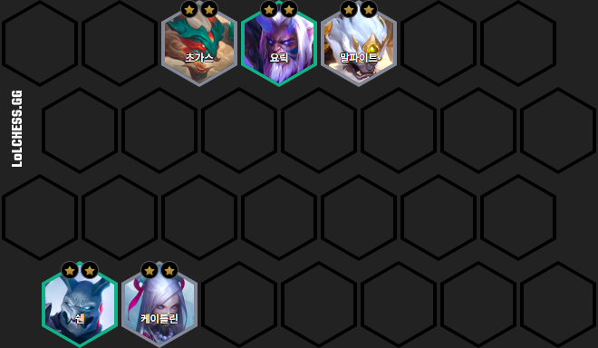[딜러: 알룬, 릴리아]· 보석 건틀릿, 라바돈의 죽음모자의 조합 아이템인쓸데없이 큰 지팡이를 추천합니다.
· 쇼진의 창, 푸른 파수꾼의 조합 아이템인여신의 눈물을 추천합니다.
[탱커: 애니]· 가고일 돌갑옷, 덤불 조끼의 조합 아이템인쇠사슬 조끼를 추천합니다.
· 쇼진의 창, 푸른 파수꾼의 조합 아이템인여신의 눈물을 추천합니다.
[탱커: 애니]· 가고일 돌갑옷, 덤불 조끼의 조합 아이템인쇠사슬 조끼를 추천합니다.
먹그림자 카이사 덱
[딜러: 카이사, 자야]· 구인수의 격노검, 거인 학살자의 조합 아이템인곡궁을 추천합니다.
· 거인 학살자, 무한의 대검의 조합 아이템인BF 대검을 추천합니다.
[탱커: 아트록스, 볼리베어, 우디르]· 태양불꽃 망토, 워모그의 갑옷의 조합 아이템인거인의 허리띠를 추천합니다.
· 거인 학살자, 무한의 대검의 조합 아이템인BF 대검을 추천합니다.
[탱커: 아트록스, 볼리베어, 우디르]· 태양불꽃 망토, 워모그의 갑옷의 조합 아이템인거인의 허리띠를 추천합니다.
이타심 소라카 리롤 덱
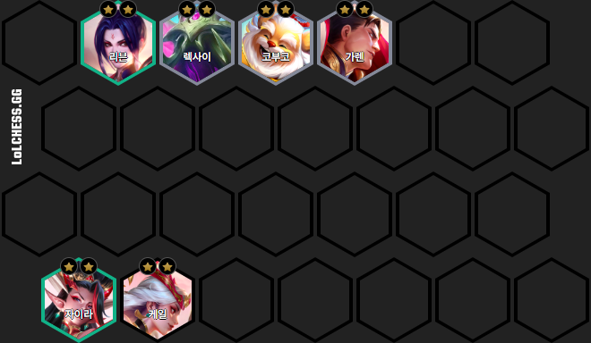[딜러: 소라카, 알룬]· 보석 건틀릿, 대천사의 지팡이의 조합 아이템인쓸데없이 큰 지팡이를 추천합니다.
· 쇼진의 창, 푸른 파수꾼의 조합 아이템인여신의 눈물을 추천합니다.
[탱커: 다이애나]· 태양불꽃 망토의 조합 아이템인쇠사슬 조끼를 추천합니다.
· 쇼진의 창, 푸른 파수꾼의 조합 아이템인여신의 눈물을 추천합니다.
[탱커: 다이애나]· 태양불꽃 망토의 조합 아이템인쇠사슬 조끼를 추천합니다.
도자기 애쉬 리산드라 덱
[딜러: 애쉬, 리산드라]· 구인수의 격노검, 거인 학살자의 조합 아이템인곡궁을 추천합니다.
· 무한의 대검, 거인 학살자의 조합 아이템인BF 대검을 추천합니다.
· 구인수의 격노검, 보석 건틀릿, 마법공학 총검의 조합 아이템인쓸데없이 큰 지팡이를 추천합니다.
[탱커: 아무무]· 태양불꽃 망토, 워모그의 갑옷의 조합 아이템인거인의 허리띠를 추천합니다.
· 무한의 대검, 거인 학살자의 조합 아이템인BF 대검을 추천합니다.
· 구인수의 격노검, 보석 건틀릿, 마법공학 총검의 조합 아이템인쓸데없이 큰 지팡이를 추천합니다.
[탱커: 아무무]· 태양불꽃 망토, 워모그의 갑옷의 조합 아이템인거인의 허리띠를 추천합니다.
4암영 4기원자 알룬 덱
[딜러: 알룬]· 보석 건틀릿, 라바돈의 죽음모자의 조합 아이템인쓸데없이 큰 지팡이를 추천합니다.
· 쇼진의 창, 푸른 파수꾼의 조합 아이템인여신의 눈물을 추천합니다.
[탱커: 사일러스, 애니]· 가고일 돌갑옷, 거인의 결의의 조합 아이템인쇠사슬 조끼를 추천합니다.
· 쇼진의 창, 푸른 파수꾼의 조합 아이템인여신의 눈물을 추천합니다.
[탱커: 사일러스, 애니]· 가고일 돌갑옷, 거인의 결의의 조합 아이템인쇠사슬 조끼를 추천합니다.
천계 소라카 리롤 덱
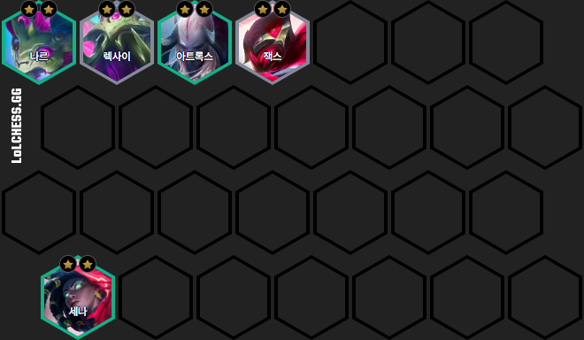[딜러: 소라카]· 보석 건틀릿, 대천사의 지팡이의 조합 아이템인쓸데없이 큰 지팡이를 추천합니다.
· 쇼진의 창, 푸른 파수꾼의 조합 아이템인여신의 눈물을 추천합니다.
[탱커: 니코]· 태양불꽃 망토, 워모그의 갑옷의 조합 아이템인거인의 허리띠를 추천합니다.
· 쇼진의 창, 푸른 파수꾼의 조합 아이템인여신의 눈물을 추천합니다.
[탱커: 니코]· 태양불꽃 망토, 워모그의 갑옷의 조합 아이템인거인의 허리띠를 추천합니다.
천계 사신 카직스 리롤 덱
[딜러: 카직스, 요네]· 피바라기, 밤의 끝자락, 무한의 대검의 조합 아이템인BF 대검을 추천합니다.
· 무한의 대검, 정의의 손길의 조합 아이템인연습용 장갑을 추천합니다.
· 무한의 대검, 정의의 손길의 조합 아이템인연습용 장갑을 추천합니다.
4비전 4파수꾼 신드라 덱
[딜러: 신드라]· 보석 건틀릿, 마법공학 총검의 조합 아이템인쓸데없이 큰 지팡이를 추천합니다.
· 쇼진의 창, 푸른 파수꾼의 조합 아이템인여신의 눈물을 추천합니다.
[탱커: 파수꾼]· 태양불꽃 망토, 덤불 조끼의 조합 아이템인쇠사슬 조끼를 추천합니다.
· 쇼진의 창, 푸른 파수꾼의 조합 아이템인여신의 눈물을 추천합니다.
[탱커: 파수꾼]· 태양불꽃 망토, 덤불 조끼의 조합 아이템인쇠사슬 조끼를 추천합니다.
6난동꾼 코부코 리롤 덱
[딜러: 코부코]· 피바라기의 조합 아이템인BF 대검을 추천합니다.
· 거인의 결의의 조합 아이템인쇠사슬 조끼를 추천합니다.
[탱커: 렉사이, 갈리오]· 태양불꽃 망토, 구원의 조합 아이템인거인의 허리띠를 추천합니다.
· 거인의 결의의 조합 아이템인쇠사슬 조끼를 추천합니다.
[탱커: 렉사이, 갈리오]· 태양불꽃 망토, 구원의 조합 아이템인거인의 허리띠를 추천합니다.